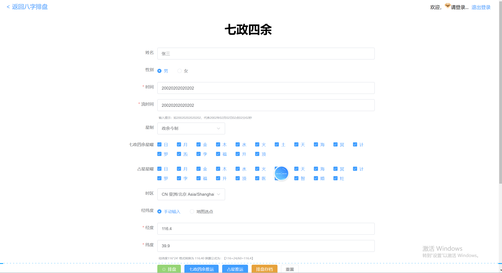

八字与四柱
干支、十神、藏干、纳音、刑冲合害与大运流年。
查看八字专题从四柱八字、十神、五行和大运流年，到紫微斗数、奇门遁甲、七政四余与大六壬，用真实排盘截图和可核验 JavaScript 说明产品与技术边界。
查看排盘体系每张截图保留完整盘面，配合对应专题正文，让用户和搜索引擎都能理解页面展示的实际功能。





日期、时间、时区和参数通过浏览器工具统一处理。
八字、十神、藏干、干支关系和大运相关代码。
输出排盘界面，或调用相应后端接口完成集成。
该项目用于传统文化软件展示、技术研究和产品评估。截图不等于全部后端算法已经公开，排盘内容也不构成确定性预测或医疗、法律、金融和人生决策建议。